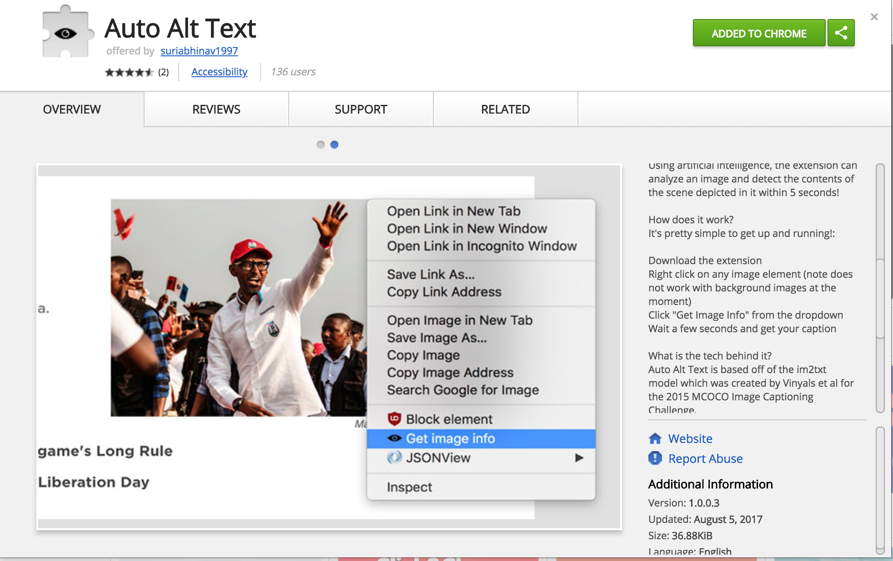
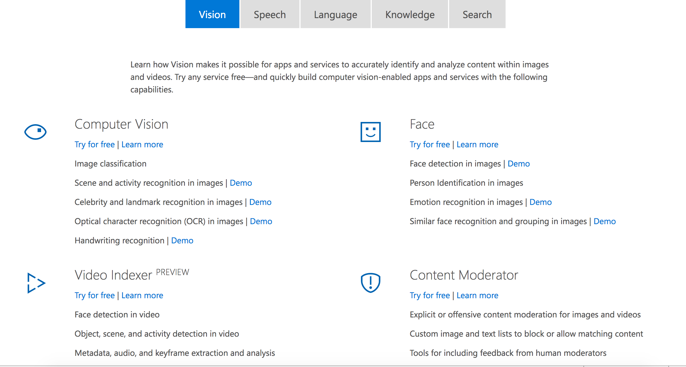

How HTML5 JavaScript API's and AI can empower disabled people
Accessibility Meetup
Thursday, 27th of September 2018
By Prem Nawaz Khan / @mpnkhan
About Me

Statistics
- Assistive products: Hearing aids, wheelchairs, communication aids, spectacles, prostheses, pill organizers and memory aids .
- Globally, more than 1 billion people need 1 or more assistive products.
-
More than 2 billion people will need at least 1 assistive product by 2050,
with many older people needing 2 or more. - Today, only 1 in 10 people, in need have access to assistive products.
References: World Health Organization Report , WRD Report
How People with Disabilities Use Web
Most cases, needs Special Input, Output to access information
Designing for PWD
- Visual Impaired - Screen reader, Screen magnifier, HCM, Custom styles
- Hearing Impaired- Captions, Description
- Motor related - Adaptive Keyboard, special mouse, switches, Head Mouse
Designing for Old users

HTML 5 Java Script API's
Speech as Input
const SpeechRecognition = window.SpeechRecognition || window.webkitSpeechRecognition;
const recognition = new SpeechRecognition();
Speech as Input
recognition.lang = 'en-US';
recognition.interimResults = false;
Speech as Input
recognition.addEventListener('result', (e) => {
let last = e.results.length - 1;
let text = e.results[last][0].transcript;
console.log('This is the input text');
});
Speech Input Demo
Uses
- Voice based Commands for UI
- Real time Captioning
Text to Speech
function synthVoice(text) {
const synth = window.speechSynthesis;
const utterance = new SpeechSynthesisUtterance();
utterance.text = text;
synth.speak(utterance);
}
Text to Speech Demo
Demo
Real Talking TomObject tracking using getUserMedia
 navigator.mediaDevices.getUserMedia({video: true})
navigator.mediaDevices.getUserMedia({video: true})
Object tracking using getUserMedia
on callback
video.srcObject = stream
canvas.getContext('2d').drawImage(video, 0, 0);
img.src = canvas.toDataURL('image/webp');
Head Tracking for Low Vision
Demo
Adjustable TypographyGesture detection for Motor Disabled
Browsing Web with Hand GesturesEye Tracking
Browsing Web with Eye GesturesHow Artifical Intelligence can empower people with disabilities
- Voice Recognition
- Image recognition
- Facial recognition
- Lip-reading recognition
- NLP for Learners with Autism or Language Disorders
- Text to Sign Language Interpretation
Voice Recognition
Smart phones & Smart speakers - best examples of reviving AI
Apple's Siri, Amazon echo, Google Assistant, Cortana for Windows
Pros & Cons
Lack of Alt text is a barrier for PWD
<img src="niceFlower.jpg" alt="Lily in a Pond">
For websites like PayPal,
It is about educating Content editors to input alternate text in their Content Management System
(and/or)Educating Web Developers to put alt text for images
User generated content
- Every day, people share more than 2 billion photos across Facebook, Instagram, Messenger, and WhatsApp
- Facebook announced their automatic alt text in April 2016

April 2017, Automatic Alt text extension for Chrome
Based on Tensor flow and im2txt Model
April 2018, Around 25 API's made available by Microsoft for public use
Image Alt text Demo
DemoFacial recognition
Using Facial recognition, we can
- Search, identify, and match faces in your private repository
- Find Similar faces
- Organize many unidentified faces together into groups, based on their visual similarity
Facial recognition
Recognizing Humans versus Bots

CAPTCHA sucks?
Examples like iPhone X Facial Unlock, Windows Hello
Facial recognition Demo
DemoLip-reading recognition
Automated captions using Lip Reading
Oxford University researchers partnered with Google on a new AI tool that reads lips, and the results were significant.
 Trained with a dataset of more than 100,000 natural sentences.
Trained with a dataset of more than 100,000 natural sentences.
NLP (Natural language processing) for Learners with Autism or Language Disorders
Helpicto is an android app which uses speech to text and Microsoft Cognitive API to convert speech a set of images which students with Language disorders related to autism, dysphasia, or Alzheimer’s disease
Cognitive API uses AI to split the sentences and sends back the intents which is converted to a list of images
The speech command is “Do you want to eat an apple?” Helpicto will then generate three images: the child himself, the action of eating, and a picture of an apple.
Text to Sign Language Interpretation
Real Time American Sign Language Video Captioning using Deep Neural Networks